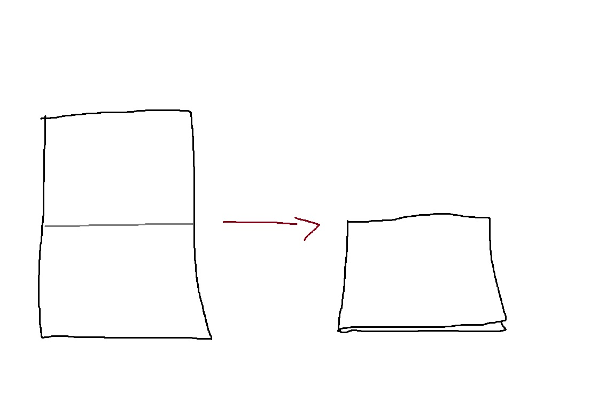
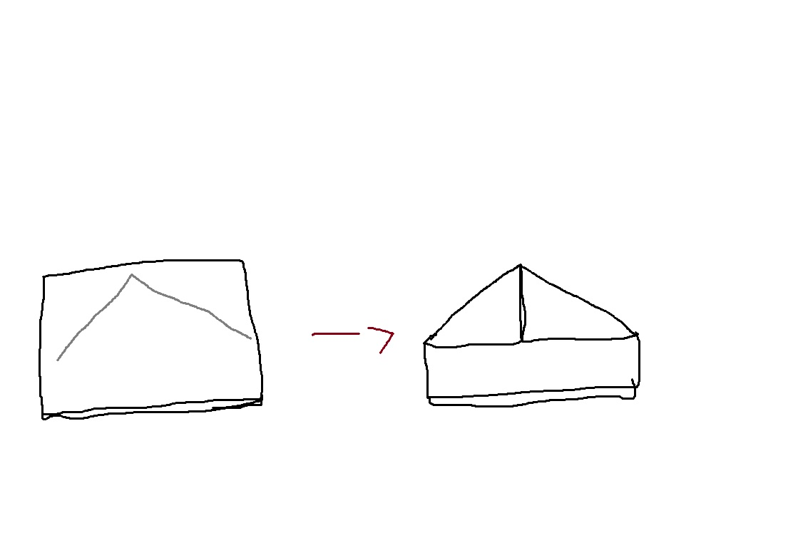
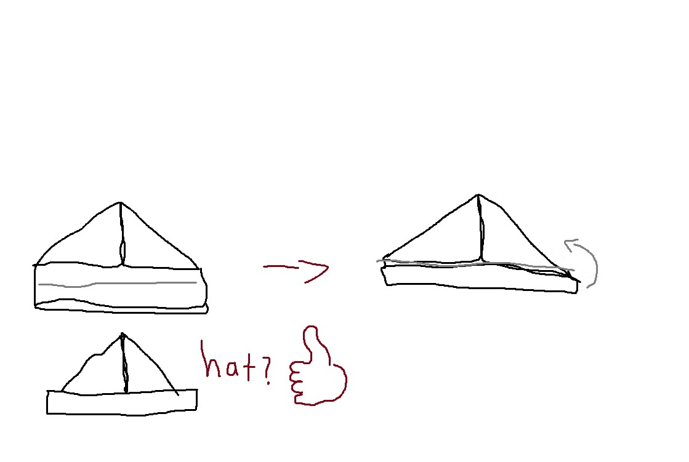
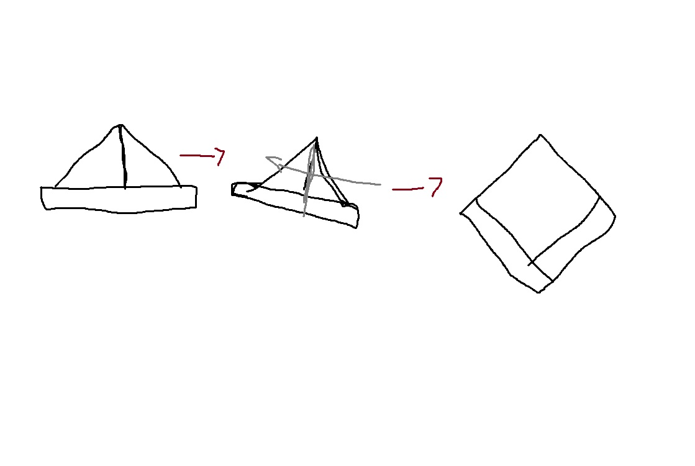
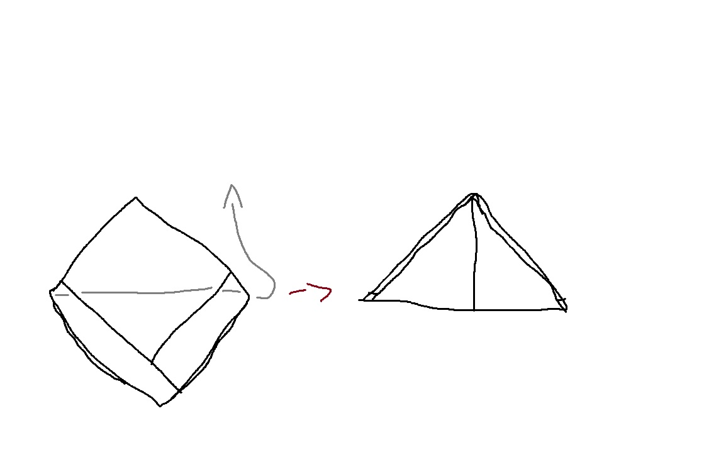
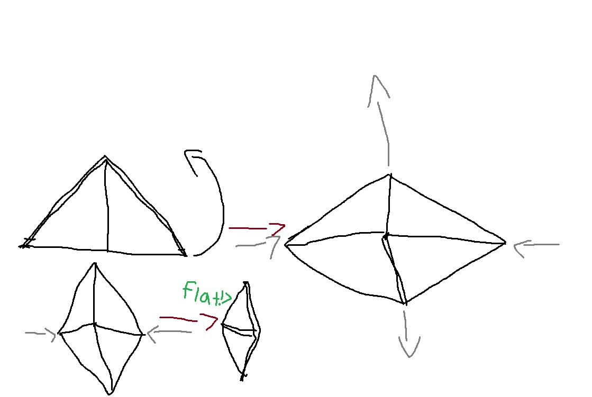
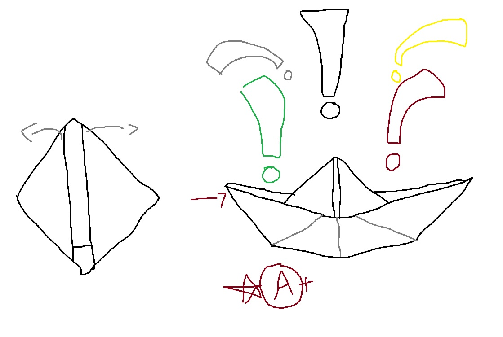

\
Schlibistious
How to Fold a Paper Boat
First, get the actual piece of paper (i know suprising right). Make sure it's a rectangular piece of paper, not a square piece of
paper. Now the actual first step is to fold the paper in half vertically like shown in this epic picture.

Next, fold both of the top corners into the center of the paper almost like how you would fold a paper airplane.
Obviously though we are not folding a paper airplane. Stop getting distracted. If you also want to fold and unfold the
paper in half horizontally first so that you know exactly where the center is, then that's fine.

Next, fold the funny looking tab things under the triangle up twice so that it covers the bottom
of the triangle about an inch depending on how big your paper is on both sides. Sometimes if your paper is a really weird dimension,
you only need to fold up the tab twice. Now it kinda looks like a hat! Too bad were not making one.

Now open up the bottom opening of the "hat" all the way until the hat is entirely flat horizontally and it transforms
into a square.

Fold the bottom corner of the diagonal square to the top corner of it on both sides. It should create a perfect half
line from the top to bottom, creating a triangle.

Open up the bottom of our triangle all the way until it is entirely a flat square like we did with the "hat",

and now pull those weird little triangle flaps on both sides wraping around the square outwards, and KABOOM!!

YOU DID IT!! YOU HAVE A PAPER BOAT NOW!! WERE FREE HAROLD, WERE FINALLY FREE!! WE CAN IMPRESS ALL OF OUR FRIENDS WITH PAPER BOATS NOW, AAAAAAAAAAAAAAAAAAAAAAGH